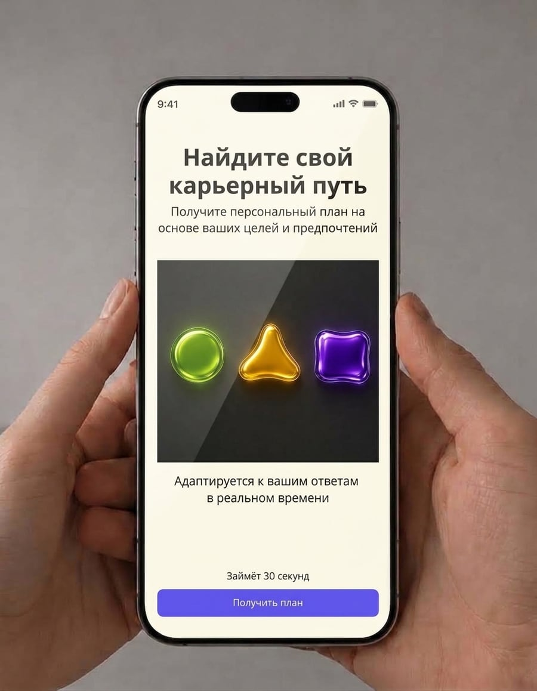
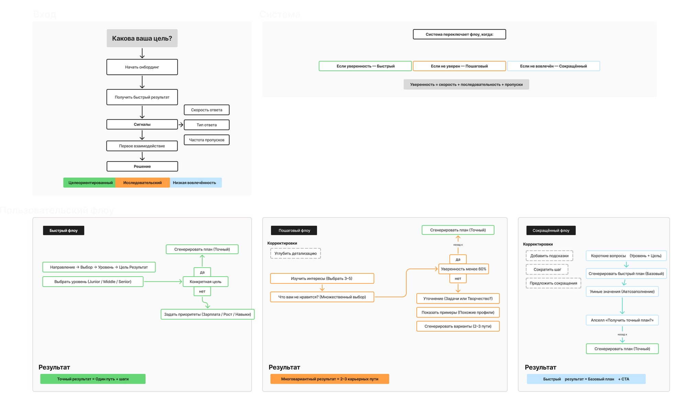
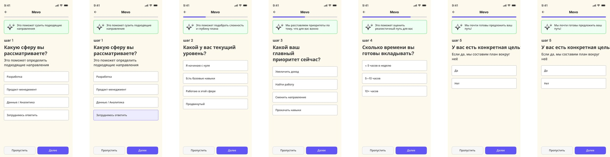
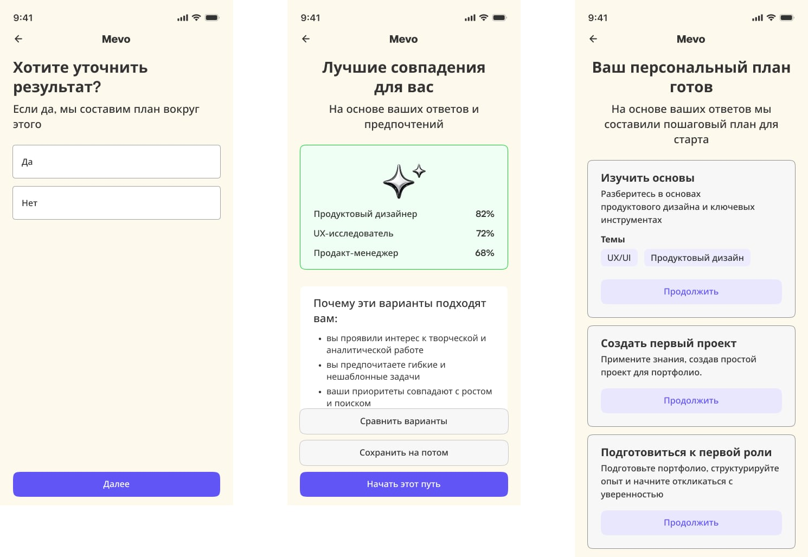
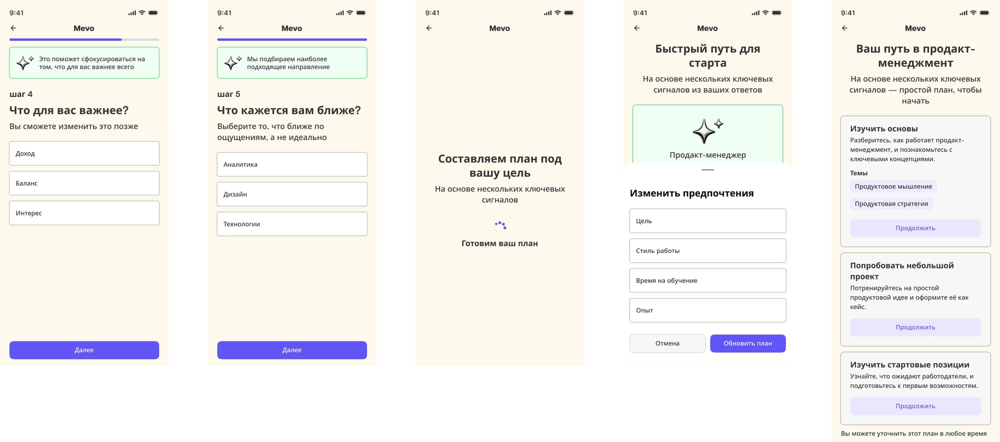
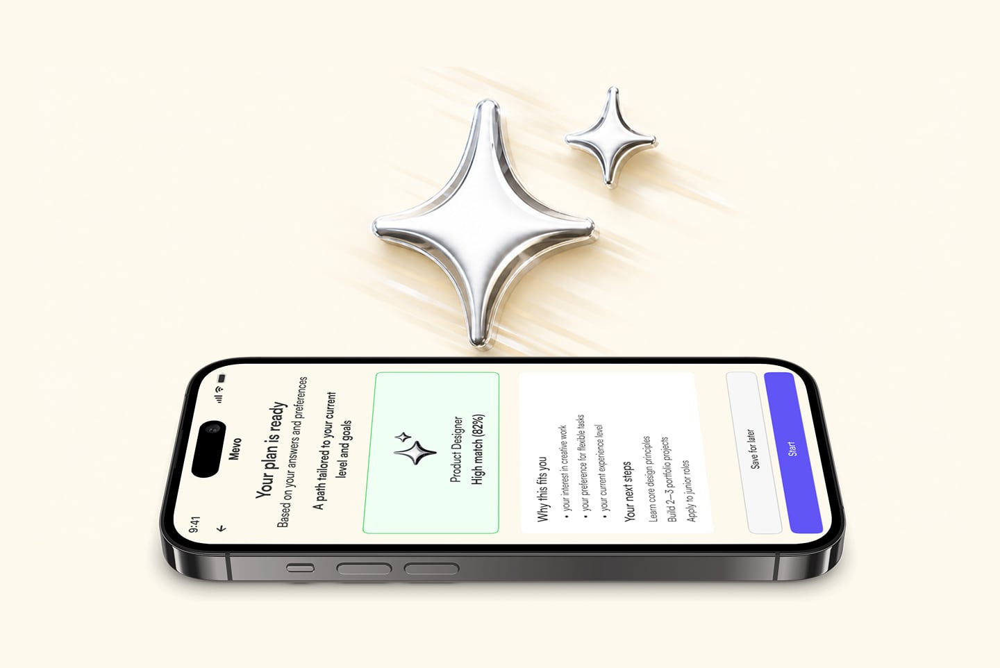

О проекте
Первые недели работы во многом определяют успешность интеграции сотрудника в компанию.
Однако большинство процессов адаптации построены по линейному сценарию и предполагают одинаковый путь для всех сотрудников независимо от их опыта, уровня подготовки и индивидуальных потребностей.
Проект исследует возможность создания системы онбординга, которая способна адаптироваться под каждого пользователя и помогать сотрудникам быстрее достигать уверенности в новой роли.

Проблема
Традиционные программы адаптации имеют ряд ограничений:
- одинаковый сценарий для всех сотрудников;
- отсутствие персонализации;
- низкая гибкость при возникновении сложностей;
- недостаток обратной связи в процессе адаптации;
- отсутствие связи между онбордингом и дальнейшим развитием сотрудника.
В результате многие сотрудники сталкиваются с неопределённостью и испытывают сложности в первые недели работы.
Цель проекта
Разработать систему адаптации, которая:
- реагирует на действия сотрудников в режиме реального времени;
- помогает преодолевать возникающие трудности;
- формирует персонализированный маршрут адаптации;
- поддерживает профессиональное развитие после завершения онбординга.
Основная идея
Вместо фиксированного сценария система непрерывно анализирует сигналы пользователя и адаптирует дальнейший опыт взаимодействия.
Каждое действие сотрудника становится частью процесса принятия решений.
Это позволяет создавать более гибкий и персонализированный путь адаптации.
Как работает система
Адаптивный механизм состоит из нескольких последовательных этапов:

Поведение как источник данных
Вместо использования статических анкет система учитывает реальные действия сотрудника.
Она анализирует:
- скорость прохождения этапов;
- повторяющиеся трудности;
- предпочтительные форматы взаимодействия;
- уровень вовлечённости;
- успешность выполнения задач.
На основе этих данных платформа корректирует дальнейший сценарий.

Персонализированный опыт
Каждый сотрудник получает уникальный путь адаптации.
Если система обнаруживает затруднения, она предлагает дополнительную поддержку.
Если сотрудник успешно проходит этапы, сценарий может быть сокращён или дополнен новыми возможностями развития.

От адаптации к развитию
Одной из ключевых идей проекта стало расширение роли онбординга.
После завершения первоначальной адаптации платформа продолжает сопровождать сотрудника и помогает формировать дальнейшие карьерные шаги.
Таким образом онбординг становится частью долгосрочного развития внутри компании.

UX-принципы
Adaptability
Система меняется вместе с пользователем.
Personalization
Каждый сотрудник получает индивидуальный опыт.
Guidance
Платформа помогает преодолевать сложности на каждом этапе.
Growth
Онбординг становится отправной точкой для дальнейшего профессионального развития.
Результат
Система построена на пятишаговом цикле — Start, Signals, Adapt, Next Step, Result — который непрерывно перестраивает путь адаптации на основе реальных действий сотрудника — скорости прохождения этапов, повторяющихся сложностей — а не статичной анкеты на старте.
Это смещает роль онбординга: вместо разового процесса перед началом работы — сопровождение, которое продолжается и после адаптации, формируя следующие шаги развития.
Кейс — концептуальная проработка адаптивной механики для HR-контекста: общая логика (реакция на поведение в реальном времени) переносима на продуктовый онбординг, но валидировалась не на реальных сотрудниках, а как дизайн-система.
